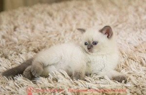

ОКРАСЫ БРИТАНСКИХ КОШЕК
Окрасы британских кошек на сегодняшний день представляют собой большое разнообразие.
Британская классика – голубые однотонные кошки пришли вместе с породой с самого начала, а некоторые редкие виды окрасов выведены большим трудом селекционеров.
КАКИХ ОКРАСОВ БЫВАЮТ БРИТАНСКИЕ КОШКИ?
Каких окрасов бывают британские кошки? Какие названия окрасов британских кошек бывают? Как правильно называются? И как удостовериться, что окрас правильный?
Часто мы слышим вопросы: цвета британцев, расцветка британских кошек, рисунок британского кота, раскраска британских котят, окраски британских кошек – но все же правильно цвет и рисунок шерсти называется – окрас.
На сегодняшний день британская порода кошек насчитывает более 200 различных видов окрасов.

К каждому окрасу предъявляются высокие требования и свои стандарты . Все британские котята в обязательном порядке проходят предварительную оценку эксперта прежде, чем переехать в новый дом. Проверяется специалистом в том числе и окрас котенка чтобы он соответствовал общепринятым нормам, и присваивают ему соответствующую кодировку, которая в последующем заносится в родословную.
Формируется окрас весьма сложно, здесь множество факторов играет свою роль: например, генетика, предрасположенность родителей, есть доминантные и доминирующие окрасы, существует понятие «совместимости» окрасов родителей, а также каждый из родителей может быть носителем определенного гена в окрасе. Поэтому при вязке кошек учитываются все факторы суммарно и подбираются партнеры полностью подходящие друг другу.
ХАРАКТЕРИСТИКИ ОКРАСА БРИТАНСКИХ КОШЕК
Окрас включает в себя не просто цвет шерсти, а целый набор характеристик, которые суммарно определяют окрас британской кошки.
Окрас британского кота включает с себя следующие характеристики:
- цвет шерсти;
- цвет подшерстка;
- рисунок на шерсти;
- цвет глаз
- цвет подушечек лап;
- цвет мочки носа.
ВИДЫ ОКРАСОВ БРИТАНСКИХ КОШЕК
Также все окрасы британцев можно разделить на категории:
- Однотонные окрасы (подробнее
здесь):

- Черепаховые окрасы (подробнее
здесь):
- Черно-красная черепаха
- Шоколадно-красная черепаха
- Голубо-кремовая черепаха
- Лилово-кремовая черепаха
- Циннамон-красная черепаха
- Фавн-кремовая черепаха
- Колор-пойнт черепахи(торти пойнт)
- Дымчатый черепаховый
- Биколорные черпахи(калико)
- Колор-пойнты (или сиамские) (подробнее здесь): 
- Окрасы с белым (подробнее
здесь):
- Классический окрас с белым: биколор, арлекин, ван, триколор, миттед
- Колор-пойнт с белым
- Биколорные черепахи (калико)
- Окрасы с белым табби
- Дымчатые с белым окрасом
- Смешанные окрасы (биколор черепаховый затушеванный, биколор колор-пойнт завуалированный и др.)
Также вы можете посмотреть все коды пород и окрасов
В нашем питомнике Вы найдете множество окрасов от классических до самых редких мировых эксклюзивов. Мы поможем с выбором и ответим на все вопросы!